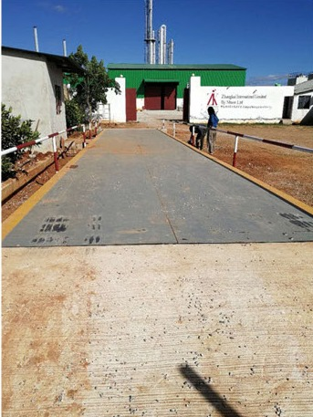

Modular truck scales
SCS models cover 20 to 150 tonnes with pit or above-ground installation.
Request informationNo matching equipment. Reset

SCS models cover 20 to 150 tonnes with pit or above-ground installation.
Request information
Select a configuration according to rolling stock, track layout and operating procedure.
Request information
Continuous bulk weighing depends on belt width, speed and material characteristics.
Request information
Vessel weighing requires review of supports, pipe connections and module installation.
Request information